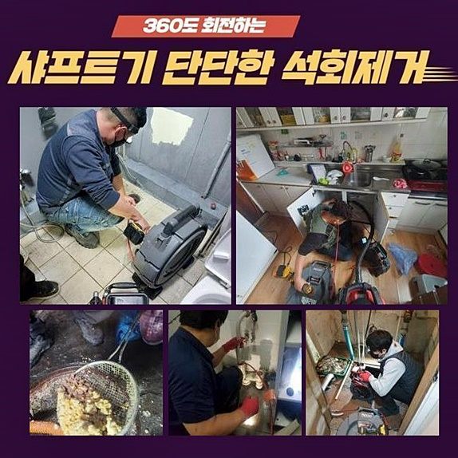
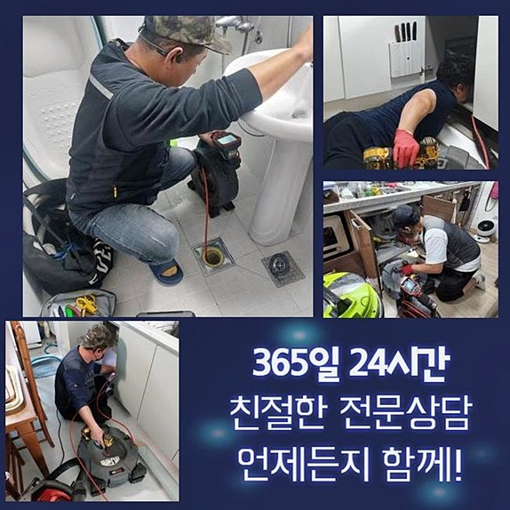
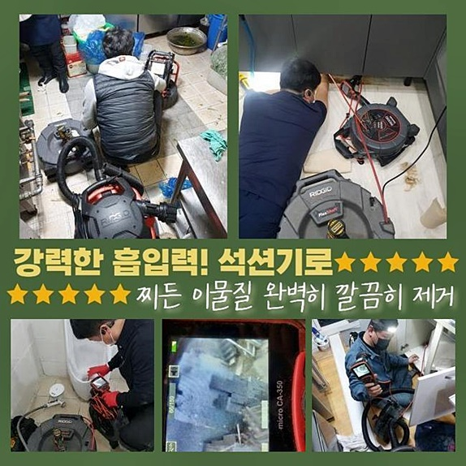
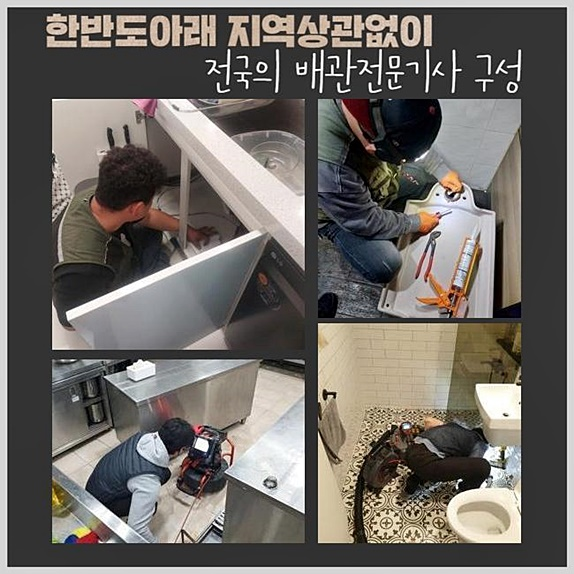
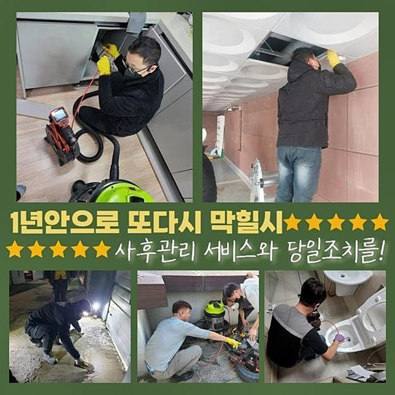
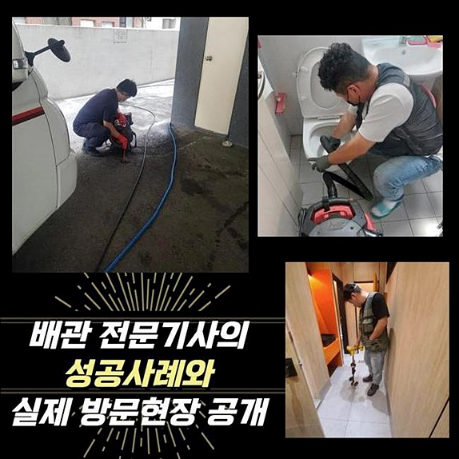
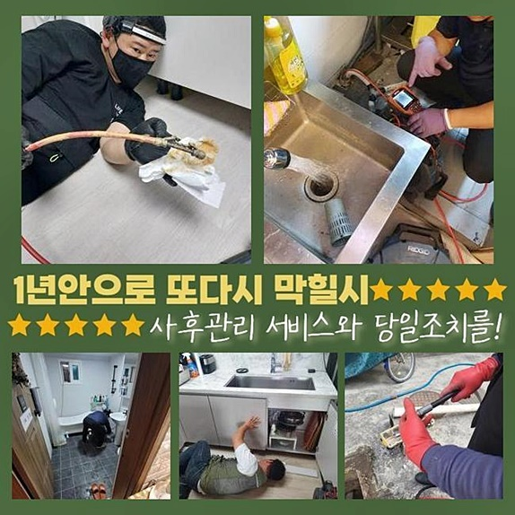

🏠 강동구 둔촌동오수관뚫음 강일동 하수구청소 설비
용인 하수구막힘 전문 시공 후기

📋 작업 개요
- 위치: 용인
- 서비스 유형: 하수구막힘, 배관막힘, 누수수리, 역류해결, 뚫는업체, 배관청소, 고압세척
- 작업 일시: 2024. 7. 2. 17:04
- 업체명: 하수구수사대 (010-5615-2118)
🔍 문제 상황
강동구 둔촌동오수관뚫음 강일동 하수구청소 설비
역류들이 발생되면 수도사용에 제한이생겨요
가정에서와 같이 그외의 경우에도 같아요
역류가 발생될 땐 일정수준 오수만 배출되는게 아닌 내부에 쌓인 이물들과 냄새가 발생되므로 신속히 바로 잡아야해요
앞서 달려갔던 장소에서도 하수도가 역류해버려서 저희들께 문의하셨는데요
도착한 후 하수관을 관찰했어요
지하부분의 하수관에서 문제가 생긴 상태로서 냄새들도 심각했습니다
외관 상 막혀버린 오류를 못보기에 점검을 할 생각이였죠
떠다니는 잔해는 걷어내고 펌프시설을 흘러들어간뒤 물까지 제거합니다
그래야만 내시경장치로 보았을 경우 내부가 깔끔하게 보여요
내시경으로 배수관을 주시하였더니 슬러지가 엉켜서 문제가 된 현상을 띄고있었죠
지금껏 원칙대로 청소가 안되서 문제가 심화된 것입니다
배수관에도 잔여물이 자리잡은 상태였고 지금까지 배출된 기름의 잔재와 음식물등의 잔해로 문제들이 발생된거죠
이토록 여러사람이 통하여주어야하는 공간일수록 여러차례 들여다보는게 필요하죠
공동설비의 경우 허용량이 많으므로 깊은곳에서부터 잔해물이 누적되기에 최적화되는것이죠

🔎 원인 분석
💡 전문가 진단: 정밀 진단 장비를 사용하여 슬러지의 고착 여부를 판명하고 타격/세척 작업을 실시했습니다.
더군다나 슬러지의 경우 초창기엔 점액질의 형태겠으나 축적을 거듭하며 강도가 변하는데요
양상이 바뀌며 간소한 대응으론 제거할 수 없을만큼 강건하게 자리잡습니다
해당 문제에서는 전문인들의 도움들을 받은 뒤 안정적으로 시공해야해요
전형적으로은 배수관의 심부에서 오염원이 발생되는데요
내시경장치를 배출된뒤 바닥면을 중점으로 두고 관찰해보았습니다
슬러지가 굳게되어 증상들을 발생케한것을 오차없이 알아냈죠
지금까지 빠르게 된 관리가 없어서 잔해물 축적이 심각해서 이번기회에 고압수들을 써서 청소들을 실시하고자 했어요
배수관 이곳저곳을 살펴 대형 고압노즐분사를 이용했습니다
대다수 실내의 경우에는 소형 고압수청소를 써서주지만 오늘처럼 내구성이 강한 하수도에서는 대형 고압수들을 흘러들어간뒤 청소를 이어갔습니다
구동기와 결속되어있는 고압세척기장비를 이용합니다
보통의 경우 세척 진행 시 사용되는 수도를 끌어와야되는데 이럴때 사용되는 물은 마련을 해준다거나 청소전에 수도 관련 설비쪽에 도움을 받아야 바람직한 세척이 이행될 수 있어요
아니면 배관의 문제들을 체크해봐야되겠습니다
물리력이 월등한 물줄기를 뿜어내어 문제들을 해결하므로 적절한 물을 분사시켜 시정하는게 핵심이에요
그리고 연결부분에 강력한 수압을 가해주면 파손으로 인해 누수문제가 생기는 건 시간문제인데요
이런 문제로 인해 내시경을 써서 배관의 모습을 체크해보는것이 중요하겠습니다
잔여물이 쌓이게된 부분을 타겟으로하고 청소를 진행시켰습니다

🔧 작업 과정
강력한 수압을 쏘기도 하지만 세척용액과 고온이므로 굳어진 잔해물을 청소해주는데요
이물을 중화시켜주어 원만하게 작업하도록 도와주기에 여러모로 순기능을 가지고있습니다
이러한 세척법으로 이물질들을 깨끗하게 청소해드렸는데요
고압수청소가 시작되자 잔해가 분해되며 통수불가했던 오수들이 빠지는걸 보았습니다
걸러진 잔해물들은 일일히 옮긴 뒤 마무리까지 실시했어요
그러나 이쪽 스팟 외에 배수관에도 증상이 생겨나 해당 부분도 세척이 요구되었어요
매립된 하수관로 내측에 이물들을 확인했죠
이런 문제로 인해 샤프트기를 사용해서 이물들을 제거시켰어요
잔해가 자리하고있는 위치들을 타겟한 다음 샤프트기로 청소해주었는데요
해당 장비의 사슬부들이 돌아가며 이물을 제거시킵니다
직접 잔해물을 타격한 다음 분쇄하였더니 고착물들이 떨어져나가며 배관컨디션을 복구시켰는데요
걸러진 잔여물질을 확인하였더니 점액같은 기름때들이 상당했어요
그렇기때문에 역류증세도 발발하게되었어요
엘보라인에 자리하던 것들도 오차없이 청소해주며 제거를 실시했어요
이럴때 내시경도 투입해주어 내부 상황을 체크해가면서 작업을하죠
내시경장비의 이용없이 작업들을 할때엔 하수도의 이물이 사라졌나 확인할 수가 없습니다
이런 문제로 인해 하수구 작업에서 내시경은 절대적이죠
샤프트기기를 통하여 배관 배수관을 세척해주면 오염원을 원만히 관리하게됩니다
잔여물이 오래도록 누적된 경우라면 내구성자체에 문제들이 생겨버리니 각별한 주의를 부탁드려요
이물세척을 실시하고서 내시경을 통해 내부 증세를 체크해보았죠
남은 이물들이 없진않은지 검수했어요
원만한 구배가 지속되어야 막히는 사태가 생기지않는데요
하수관은 적절한 유수흐름을 확보해주는 것이 중요하기에 뚫어내는 시공 뒤에도 배수상태를 같이 체크해봅니다
작업이 끝나고 내시경으로 관찰하니 잔해가 티끌도 안보이는걸 확인했어요
그다음 관로로 하수를 배출해주며 빠르게 흐르는지 확인했어요


✅ 작업 완료
이전모습이랑은 비교도 안될정도로 조속하게 통수가 이뤄지는걸 인지할 수 있었어요
이후에 하수시스템 오류를 겪게되는 불미스러운 일들은 없답니다
주기성을 가지고 작업을 해주셔야 배수관을 수월하게 이용할 수 있습니다
잔여물이 침전되어 잔존하면 이와 달리 배수관로에서 역류되어 내부로부터 문제들을 불러일으킵니다
주기성 띄는 점검과 평소에 이물이 축적될 수 없게 주의해 주시는 통해서야되는데요
저희 업첸 꼼꼼한 작업을 초고로 해 다양한 문제들을 해소시켜드려요
저희들이 필요하시면 언제라도 문의주시기 바라요!




⚠️ 베란다 누수 및 방수 관리 방법
- ✅ 비가 많이 올 때 창틀 주변이나 아래층 천장에 얼룩이 생기는지 정기적으로 확인해 보세요.
- ✅ 우수관 주변 실리콘 마감이 들뜨거나 깨진 틈새가 있는지 손상 여부를 수시로 체크하세요.
- ✅ 베란다 바닥 타일의 줄눈(메지)이 소실되면 그 틈으로 물이 침투하여 누수가 유발됩니다.
- ✅ 누수 의심 증상 발견 시 방치하면 아래층 손실이 커지므로 즉시 전문가의 진단을 받으십시오.
💡 핵심 정리
- 확실한 장비 작업(내시경 점검 및 샤프트 스케일링)으로 원인을 뿌리 뽑습니다.
- 작업 후 1년 이내에 동일한 부위 재발 시 100% 무상 A/S 서비스를 보장합니다.
- 서울 · 경기 · 인천 전 지역에 24시간 언제든 긴급 출동할 수 있도록 항시 대기 중입니다.
❓ 자주 묻는 질문 (FAQ)
🚨 용인 하수구막힘 문제로 고민이신가요?
정확한 원인 진단과 확실한 시공으로 재발 없는 해결을 약속드립니다.
24시간 긴급 출동 | 서울 · 경기 · 인천 전지역 | 1년 내 재발 시 무상 A/S